Gleb Vdovin
OKO Technologies
Reinier de Graafweg 300, 2625 DJ Delft,
The Netherlands
Phone:
31-15-2569361, email:
oko@xs4all.nl
©1993-1999, Gleb Vdovin
LightPipes is a portable set of Unix-style tools written in C. It is designed to model the propagation of light in coherent optical devices in scalar approximation. The toolbox is based on efficient propagation algorithms, providing extended possibilities of beam manipulation. Simulations of interferometers, holographic setups, laser resonators, lasers, Fourier optics, waveguides are possible. The source code is portable, it can be compiled on any low-end workstation or a decent PC under Unix, MSDOS or OS2. The MSDOS binary is reported to run also in DOS box under OS2 and W95.
The toolbox consists of a number of filters. Each filter represents an optical element or a step in the light propagation. The components of a model can be connected via Unix system pipes in any order in (any) shell environment to form the model of an optical system. The syntax depends on the shell used.
All filters share a huge data structure, containing sampled two-dimensional distribution of the scalar complex amplitude of light. These structures can be saved and retrieved to/from the disk at any step of computation. The number of light beams treated simultaneously is limited only by the disk space available. Tools to generate presentation quality Postscript density plots and to export portable gray-map files (PGM graphic format with magic number P2 or P5), surface wireframes (Xplot or Gnuplot required) and contour plots (Gnuplot required) are included.
C shell syntax is used for all examples in this manual. A good reference for the syntax of C shell is given in [1]. Any other shell environment or script language can be used with LightPipes as far as binary system pipes are supported.
The package is far from being perfect, there are more powerful and flexible (also much more expensive) programs around. LightPipes is written with the idea of maximum functionality with minimum of coding effort. The development was based on the tradeoff concept ``first 10% of coding effort give 90% of the functionality''.
There is no warranty for the program, to the extent permitted by applicable law. Except when otherwise stated in writing, the copyright holders and/or other parties provide the program "as is" without warranty of any kind, either expressed or implied, including, but not limited to, the implied warranties of merchantability and fitness for a particular purpose. The entire risk as to the quality and performance of the program is with you. Should the program prove defective, you assume the cost of all necessary servicing, repair or correction.
LightPipes beam propagation toolbox is copyright © (1993-1999) Gleb Vdovin. This manual (also © Gleb Vdovin) may be freely distributed and copied as a whole.
Unix/DOS source of LightPipes is distributed under GNU public license. Contact: Dr. Gleb Vdovin, OKO technologies, Reinier de Graafweg 300, 2625 DJ Delft, The Netherlands, gleb@okotech.com, http://www.okotech.com, +31-62-2794647 voice, +31-15-2574233 fax.
LightPipes.1.2 introduces finite-difference propagation routine steps and a better (cubic two-dimensional) interpolation procedure interpol. The old linear interpolation procedure remains with a new name interp1. Steps can be used to model waveguides with complex three-dimensional distribution of refraction/absorption. The new distribution also includes more tools operating on intensity/phase distributions. These service filters are not considered to be the part of LightPipes, though they extend the package possibilities. Tools are distributed ``as is'' free with source. These sources can be used as templates for customization.
More bugs were fixed, for example now lens_forvard can correctly propagate behind the focus.
Install the executables into a directory included into your search path, or link them to /bin. For MSDOS distribution use pkunzip -d to create the directory tree.
There is a set of tools, to deal with intensity and phase distributions exported by LightPipes. These tools are freeware distributed with sources. There is no manual for tools. To build tools, type make tools at the command line. You may write your own tools by modifying existing sources.
To build the full package from the source, put all source files into an empty directory. Be sure the name of the directory is included into your search path. Edit the makefile: define the C compiler installed in your system. Gnu C compiler (gcc -O2 -Wall) is the development compiler, chosen for its portability, high quality and availability on the net. Other C compilers will also work but there is no guarantee. Very probably the package compiled with the native compiler will work a bit faster. Type make. To build MSDOS binaries with DJGPP (version 1.12) type make -f makedos. DJGPP is available from numerous Simtel mirrors, directory vendors. In the case of trouble first consult your system administrator, then send email to oko@xs4all.nl (valid in 1996 and perhaps later). To use LightPipes from other directory, include the directory containing LightPipes executables into your search path, or link all executables to a directory which is included into your search path, for example to /home/joe/bin.
Any LightPipes filter invoked with no command line arguments prints short syntax description to stderr.
The package is under development, the behavior and names of commands can be different from described here. Some features can be missed in this description. In all these cases please refer to the prompt help printed by the command itself. This message is supposed to reflect the very last modifications.
Incidentally some commands of your system may have the same names as the LightPipes filters (like, for example, begin). LightPipes filter causing the problem may be renamed. There are also other ways:
The simplest way to invoke LightPipes is to type the commands at the system (Unix/MSDOS/OS2) prompt. All examples from this manual may be executed in interactive mode, i.e. you type the command at the system prompt and the computer executes it. It's a serious advantage, allowing for building simple models in usual shell environment. Sometimes the chain of piped commands is too long to be printed in one line, or doesn't fit into the line buffer. Long lines can be broken, like here:
program_a | program_b | program_c > /dev/nullwhich is equivalent to:
program_a > foo program_b < foo > foo1 program_c < foo1 > /dev/null rm foo foo1In the last example the temporary files foo and foo1 were created to store the field distribution between executions of commands. After executions, the temporary files should be deleted (with Unix command rm). Fifos (named pipes) may be used instead of files. Before being used, the fifo must be created with a command mkfifo. Fifos are faster, consume more memory, they are not supported by some systems and, if you write to the fifo, the next command must read it immediately. There are too many rules about fifos, writing to a file is much more flexible and reliable operation.
Other way to use LightPipes is to put commands in a shell script. Simple (C-shell) script has the following structure:
#!/bin/csh -f ....................... ....................... LightPipes program .... .......................File containing a script must be readable and executable under Unix.
To begin with, the data structure for LightPipes must be created: we type command begin at the shell prompt. Invoked with no arguments begin prints to the screen the help message:
begin forms the initial data structure for use by all following programs USAGE: begin B C [A], where: A is the grid dimension, grid of AxA points will be formed (if omitted, A=256) B is the grid size, the real size of the grid will be put as BxB [units you use] C is the wavelength in [units you use]Three parameters:
Obligatory for begin are only the size and the wavelength, the grid is 256x256 points by default (or smaller in the demo version). For example:
begin 0.01 1e-6 128 > /dev/nulldefines a plane wave with a unity amplitude and wavelength of 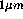 in 128x128 square grid with a size of 1x1cm.
The standard input and the standard output channels are used to pass huge binary data structures, containing the field complex amplitude, between filters. The redirection to dev/null is used in a Unix environment to prevent the binary output to the screen. Redirection to files also works:
begin 0.01 1e-6 > first_pipes_fileIn the last example the field structure generated by the program begin is written to the file
The field structures in LightPipes may be defined only in square arrays. It is not always optimal, sometimes much more memory is used than necessary. The default structure produced by begin (256x256 points) is 1MB large, and it is so, even if only in a one-dimensional array of of 256x1 points is of the interest. This approach simplifies coding and will not be changed in future.
Begin allocates memory for a square array of complex numbers, fills it with values corresponding to a uniform distribution of intensity and phase (plane wave) and redirects the header (containing information about sampling/wavelength) and the formed structure to the standard output in binary, computer-dependent format. Binary files written by LightPipes are not portable in general, because two different types of data presentation (big/little endian) exist. Binary files can be moved between computers with similar endians, thus PC/Linux -> HP is forbidden. If the output is not redirected to a file or to /dev/null, it fills the screen with garbage and may cause other problems.
LightPipes can be started with different grid samplings, for example
begin 0.01 1e-6 500 >second_pipes_filewill create 4Mb file containing 500x500 structure.
These examples illustrate the amount of RAM needed to run LightPipes. More than one megabyte is needed for 256x256 grid, 4MB for 512x512 , 16MB for 1024x1024 and a really large system is necessary for 2048x2048. These numbers may be slightly different for different computers. Some filters allocate additional memory (up to 8 times of the basic data structure in the worst case), rising further the memory requirements.
If RAM is not sufficient, the system will swap to the hard-disk, slowing down not only your job, but the whole computer. The 512x512 size is safe for the majority of Unix systems.
The data structure of the demo version is restricted to less than 1MB, thus the demo is very fast and runs on any computer.
LightPipes works with any even sampling, i.e. 300, 196, 578...
>begin 1 1 99 | rect_ap 1 > /dev/null >Sorry, number of points must be even, stoppingillustrates this feature. Program does not work with odd samplings.
The simplest component to model is an aperture. There are three types:
circ_ap filters the field through a circular aperture of radius R given as the first command line argument. Two optional arguments define the decentering of the aperture in X and Y directions.
rect_ap filters the field through a square or rectangular aperture. The first command line argument defines the side length of the (square) aperture, the second is the length of the second side of a rectangle, third and fourth are shifts in x and y directions and the last argument is the rotation of the aperture. Only the first argument is obligatory (centered square aperture).
gauss filters the field through a Gaussian intensity filter. The transmitted intensity is given by:
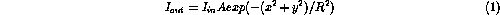
where R is the radius of the Gaussian aperture and A is the maximum transmission. This filter can be used to model gauss beams: begin followed by Gauss produces a finite grid approximation of a gauss beam.
There are three commands describing screens: circ_screen for a circular screen (inversion of the circular aperture), rect_screen is the inversion of the rectangular aperture and gauss_screen is the inversion of the gauss. The syntax for screens is exactly the same as for apertures. The gauss_screen is complementary to gauss, so that the sum of transmitted ( gauss and ``reflected'' gauss_screen intensity equals to the incident intensity. These two filters are useful for modeling of gauss apodized output couplers. gauss should be used to model the beam reflected back into the resonator by an apodized mirror while gauss_screen will produce the output beam which is filtered through the apodized mirror.
Here are examples of simple LightPipes scripts demonstrating the usage of apertures and screens:
begin 0.01 1e-6 | circ_ap 0.0025 | file_ps out1.ps > /dev/null
begin 0.01 1e-6 > foo circ_ap 0.0025 0.001 0.002 < foo | file_ps out2.ps > /dev/null
begin 0.01 1e-6 | circ_ap 0.0035 > foo rect_screen 0.002<foo | file_ps out3.ps > /dev/null
begin 0.01 1e-6 | gauss 0.004 >foo rect_screen 0.001 0.001 -0.0015 -0.002 < foo > foo1 rect_screen 0.001 0.0035 -0.002 0.0025 45 < foo1 > foo2 circ_screen 0.0005 0.0025 -0.003 < foo2 > foo3 circ_screen 0.0007 0.001 0.0015 < foo3 | file_ps out4.ps 128 > /dev/null rm foo foo1 foo2 foo3
The resulting intensity distributions are shown in Fig. 1.
Figure 1: Intensity distributions produced by four examples (from
left to right) and saved to postscript files
out[1...4].ps
When a script runs at the background - and it is frequently the case, the following trick shows to the screen the intensity distribution of your beam:
#!/bin/csh -f cat $1 | file_ps temp_ps > /dev/null ghostview temp_ps # uncomment this if ghostview executable is called gv: # gv temp_ps rm temp_ps
It's named ``show'' and that's exactly what it does. You can use it in your scripts to view the intensity distributions. You need ghostview installed to run this script.
In the previous example a new operator file_ps was introduced. file_ps is one of two LightPipes programs providing the possibility to output graphics. It writes the intensity distribution (density plot) into a postscript file. The program accepts three command-line arguments: the filename, the grid dimension and the value of contrast correction constant 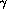 . The dimension and are optional, defaults are 128x128 (different in the demo) and 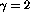 (it increases slightly the brightness in low-intensity regions, showing the distribution in a more natural way). The postscript output of the previous example (Fig. 1) is 128x128 and occupies approximately 32K on disk (different in demo). When 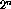 sampling is used in calculations, the sampling of postscript graph must be also i.e. 32,64,128,256,512.... The filter does not report a wrong sampling, instead it adjusts automathically the sampling to nearest sensible value.
The second program which outputs graphics is file_pgm.
file_pgm writes intensity into *.pgm file F USAGE: file_pgm F [N, G, MAX], where F is the output filename, optional parameter N is the grid size, N=128 if omitted in command line G is the $\gamma$ parameter, [0.1...10], higher G gives better contrast in low intensities, default G=2.0 MAX is the number of gray levels, default MAX=255 Output file F can be processed with netpbm package
Files (intensity distributions) produced with file_pgm can be imported by a popular X graphical program XV, which saves to many other formats and allows for different conversions. Pgm stays for ``portable graymap'' and can be converted to other formats with netpbm or pbmplus packages. Files (intensity distributions) produced with file_pgm can also be imported by LightPipes using fil_ter. The parameter for files that are saved for further use by LightPipes has to be set to 1 (as mentioned before, the default is 2).
There are possibilities of graphical interface to gnuplot:
file_int writes the intensity distribution into a file which may be plotted with gnuplot graphical package. One command line argument is necessary: the output filename. Default grid size is 64x64, you may change the default dimension with the second command line argument. file_pha is similar to file_int, it writes wrapped phase distribution. Surface plots are not always acceptable - sometimes two-dimensional plots of the cross section of the light beam are of interest. It is especially actual for wrapped phase plots, which look awful in three dimensions. The command cros_out writes into a file the X and Y cross sections of the field distributions. For example the program:
begin 0.04 1e-6 | gauss 0.01 0.003 -0.002 > foo cat foo | file_int in | file_pha pha 128 | cros_out out >/dev/null rm foowill form decentered Gaussian intensity distribution in a 256x256 grid and save the intensity distribution in a 64x64 file in, the phase distribution in file pha and cross sections in file cros_out. File in is 64x64 (by default), file pha is saved in a grid having 128x128 points. The number of points in the output file is governed by rules, described already for the postscript output.
Gnuplot has to be installed on your system to plot the distributions: If it's installed, type
gnuplot
and you will get on your screen something like:
G N U P L O T
Linux version 3.5
patchlevel 3.50.1.17, 27 Aug 93
last modified Fri Aug 27 05:21:33 GMT 1993
Copyright(C) 1986 - 1993 Colin Kelley, Thomas Williams
Send comments and requests for help to info-gnuplot@dartmouth.edu
Send bugs, suggestions and mods to bug-gnuplot@dartmouth.edu
Terminal type set to 'x11'
gnuplot>
At the gnuplot prompt type:
gnuplot> set hidden gnuplot> splot 'in' with lines gnuplot> splot 'pha' with lines gnuplot> plot 'out' using 1:2 with li, 'out' using 1:3 with li gnuplot> plot 'out' using 1:4 with li, 'out' using 1:5 with li
The first operator plots the intensity plot, second- the phase plot, the third and the fourth plot the Y intensity cross-sections and the Y phase cross-section. The graphic output is shown in Fig. 2.
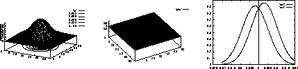
Figure 2: Graphs produced with gnuplot: Surface plot intensity, surface plot phase and intensity cross sections
Files saved with file_pha and file_int can also be imported with fil_ter, which automatically recognizes pgm and gnuplot formats.
There are six (four different algorithms, two of these four allow for coordinate conversions) different possibilities for modeling the light propagation in LightPipes.
Let us consider the wave function U in two planes: U(x,y,0) and U(x,y,z). Suppose then that U(x,y,z) is the result of propagation of U(x,y,0) to the distance z, with the Fourier transforms of these two (initial and propagated ) wave functions given by 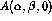 and 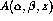 correspondently. In the Fresnel approximation, the Fourier transform of the diffracted wave function is related to the Fourier transform of the initial function via the frequency transfer characteristic of the free space 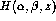 , given by [4, 5]:
where
Expressions (2, 3, 4) provide a
symmetrical relation between the initial and diffracted wave functions
in the Fresnel approximation. Applied in the order
(3) 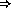 (2) (4)
they result in the diffracted wave function, while being applied in
the reversed order they allow for reconstruction of the initial wave
function from the result of diffraction. We shall denote the forward
and the reversed propagation operations defined by expressions
(2, 3 and 4) with operators  and
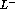 respectively.
and
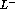 respectively.
The described algorithm can be implemented numerically using Fast Fourier Transform (FFT) [5, 6] on a finite rectangular grid with periodic border conditions. It results in a model of beam propagation inside a rectangular waveguide with reflective walls. To approximate a free-space propagation, wide empty guard bands have to be formed around the wave function defined on a grid. To eliminate the influence of the finite rectangular data window, Gaussian amplitude windowing in the frequency domain should be applied - see [5, 6] for extensive analysis of these computational aspects.
The simplest and fastest LightPipes command for propagation is forvard. It implements the spectral method described by (2, 3, 4). The syntax is simple, for example if you want to filter your field through 1cm circular aperture and then propagate the beam 1m forward, you type:
begin 0.02 1e-6 |circ_ap 0.005 |forvard 1 > foo file_int in < foo |cros_out out |file_ps out5.ps 128 >/dev/null rm foo
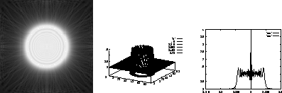
Figure 3: The result of the propagation: density, surface and cross section
intensity plots
We see the diffraction effects, intensity distribution is not uniform anymore.
The algorithm is very fast in comparison with direct calculation of diffraction integrals. Features to be taken into account:
begin 0.02 1e-6 | rect_ap 0.02 | forvard 1 > outmakes no sense. The cross section of the beam (argument of rect_ap) equals to the section of the grid (the first argument of begin), so we have a model of light propagation in a waveguide but not in a free space. One have to put
begin 0.04 1e-6 | rect_ap 0.02 | forvard 1 > outfor propagation in the near field, and may be
begin 0.2 1e-6 512 | rect_ap 0.02 | forvard 400 > outfor far field propagation. Comparing the result of previous example with the result of
begin 0.06 1e-6 512 | rect_ap 0.02 | forvard 400 > outwe see the difference.
Described FFT algorithm has its drawbacks. The positive message is that it is very fast, works pretty well if properly used, is simple in implementation and does not require any allocation of extra memory. In LightPipes.1.1 and later a negative argument may be supplied to forvard. It means that the program will perform ``propagation back'' or in other words it will reconstruct the initial field from the one diffracted. For example :
#!/bin/csh -f # initial uniform distribution: begin .1 1e-6 |circ_ap 0.025|file_ps ini.ps> foo #diffraction 30 m forvard 30 <foo |file_ps diffr30.ps >foo1 #reconstruction of the initial field: forvard -30 < foo1 | file_ps diffr_back.ps >/dev/null rm foo foo1The result produced by this script is shown in Fig. 4.
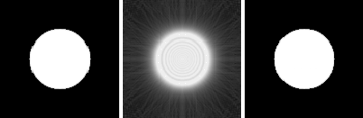
Figure 4: The initial field, the field propagated to the near field and the
field propagated back (from left to right)
Another possibility of a fast computer implementation of the operator
 is free from many of the drawbacks of the described spectral
algorithm. The operator
is free from many of the drawbacks of the described spectral
algorithm. The operator  may be numerically implemented with
direct summation of the Fresnel-Kirchoff diffraction integral:
may be numerically implemented with
direct summation of the Fresnel-Kirchoff diffraction integral:
with functions U(x,y,0) and U(x,y,z) defined on rectangular grids. This integral may be converted into a convolution form which can be efficiently computed using FFT [7, 8]. This method is free from many drawbacks of the spectral method given by the sequence (3) (2) (4), although it is still very fast due to its use of FFT for computing of the integral sums.
We'll explain this using two-dimensional example, following [7], p.100. Let the integral is defined in a finite interval 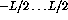 :
Replacing functions U(x) and 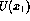 with step functions 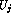 and
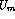 , defined in the sampling points of the grid with 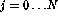 ,
and  we convert the integral 5 to the form:
we convert the integral 5 to the form:
Taking integrals in 5 we obtain:
where: 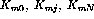 are analytically expressed with the help of Fresnel integrals, depending only onto the difference of indices. Sums 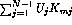 can be easily calculated for all indices m as one convolution with the help of FFT.
Filter Fresnel, defined starting from version 1.1, implements this algorithm for two-dimensional diffraction integrals. It is almost as fast as forvard (still 2 to 5 times slower), it uses 8 times more memory (to perform the two-dimensional convolution) than forvard and it allows for ``more honest'' calculation of Fresnel diffraction. As it does not require any protection bands at the edges of the region, the model may be built in a smaller grid, therefore the resources consumed and time of execution are comparable or even better than that of forvard. Fresnel does not accept negative propagation distance. When possible Fresnel has to be used as the main propagation engine within LightPipes.
Warning: Fresnel does not produce valid results if the distance of propagation is comparable with (or less than) the characteristic size of the aperture, at which the field is diffracted. In this case forvard or steps should be used.
Direct calculation of the Fresnel-Kirchoff integrals is very inefficient in two-dimensional grids. The number of operations is proportional to 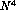 , where N is the grid sampling. With direct integration we do not have any reflection at the grid boundary, so the size of the grid can just match the cross section of the field distribution. LightPipes include a program forward realizing direct integration. Forward has following features:
The direct calculation of diffraction integral in the Fresnel approximation is used, thus forward can not be used to propagate the field to a short distances. Use forvard of steps instead.
Forward is a very slow program.
It can be shown that the propagation of the field U in a medium with complex refractive coefficient A, is described by the differential equation:
To solve this equation, we re-write it as a system of finite difference equations:
Collecting terms we obtain the standard three-diagonal system of linear equations, solution of which describes the complex amplitude of the light field in the layer 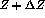 as a function of the field defined in the layer Z:
where (we put 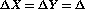 )
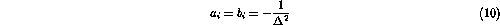
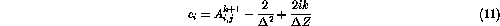
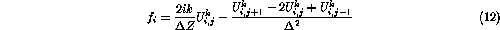
The three-diagonal system of linear equations (9) is solved by standard elimination (double sweep) method, described for example in [11]. This scheme is absolutely stable (this variant is explicit with respect to the index i and implicit with respect to the index j). One step of propagation is divided into two sub-steps: the first sub-step applies the described procedure to all rows of the matrix, the second sub-step changes the direction of elimination and the procedure is applied to all columns of the matrix.
The main advantage of this approach is the possibility to take into account uniformly diffraction, absorption (amplification) and refraction. For example, the model of a waveguide with complex three-dimensional distribution of refraction index and absorption coefficient (both are defined as real and imaginary components of the (three-dimensional in general) matrix 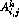 ) can be built easily.
It works also much faster than all described previously algorithms on one step of propagation, though to obtain a good result at a considerable distance, many steps should be done. As the scheme is absolutely stable (at least for free-space propagation), there is no stability limitation on the step size in the direction Z. Large steps cause high-frequency errors, therefore the number of steps should be determined by trial (increase the number of steps in a probe model till the result stabilizes), especially for strong variations of refraction and absorption inside the propagation path.
Zero amplitude boundary conditions are commonly used for the described system. This, again, creates the problem of the wave reflection at the grid boundary. The influence of these reflections in many cases can be reduced by introducing an additional absorbing layer in the proximity of the boundary, with the absorption smoothly (to reduce the reflection at the absorption gradient) increasing towards the boundary.
In LightPipes version 1.2 the refraction term is not included into the propagation formulas, instead the phase of the field is modified at each step according to the distribution of the refractive coefficient. This ``zero-order'' approximation happened to be much more stable numerically than the direct inclusion of refraction terms into propagation formulas. It does not take into account the change of the wavelength in the medium, it does not model backscattering and reflections back on interfaces between different media. Perhaps there are other details to be mentioned.
The described algorithm is implemented in a filter steps. Steps accepts 6 arguments, first - the step size, second- the number of steps, third and fourth - files containing absorption and refraction coefficients to be imported and the last two arguments are the filename where field cross-sections are saved after each N steps, where N is the last argument. All filenames are optional.
The format of imported datafiles is the same as exported for using in gnuplot. The format of the datafile into which cross sections of the field are saved at every N-th step is similar to the file generated by cros_out. It has one more column, correspondent to Z coordinate. Cross sections correspondent to different values of Z are divided by an empty line.
For example:
begin 0.004 0.63e-6 | circ_ap 0.0015 | lens 0.5 |\ steps 0.01 75 void void steps_out > /dev/null steps: void refractive coefficient file, skipping steps: void absorption coefficient file, skipping
produces file steps_out which can be used to plot the radial intensity distribution in propagating beam, for example with gnuplot:
set parametric splot 'steps_out' using 1:6:2 with lines
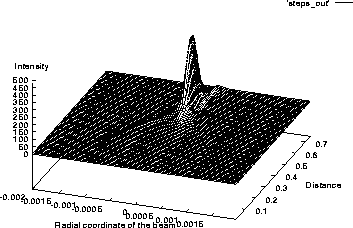
Figure 5: Steps output for a simple lens.
Steps has built-in absorption layer along the grid boundaries (to prevent reflections), occupying 10% of grid from each side. Steps can import absorption/refraction coefficients defined in the format similar to exported by file_int. Steps is the only filter in LightPipes allowing for modeling of (three-dimensional) waveguide devices.
Like forvard, Steps can inversely propagate the field, for example the sequence ...|steps 0.1 1 | steps -0.1 1 |... doesn't change anything in the field distribution. Author has tested this reversibility also for propagation in absorptive/refractive media, examples will follow.
Steps implements scalar approximation, it is not applicable for modeling of waveguide devices in the vector approximation, where two components of the field should be taken into account.
There are two commands in LightPipes, useful to model interferometers. With b_split we split the field structure (amplitude division) - one part will be written to the disk file, another will be passed to stdout. There is similar Unix command tee, writing two copies of any input - one to a file and the second to stdout. B_split works only with LightPipes data structures and provides the possibility of amplitude division, preserving the sum of intensities of the two splitted beams. The two obtained files could be processed separately and then mixed again with a program b_mix. Consider a simple model of an interferometer consisting of two apertures:
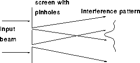
Figure 6: A simple interferometer
#/bin/csh -f
#model of a screen with two round pinholes
begin 0.005 0.55e-6 512 > beam
circ_ap 0.00012 -0.0005 < beam > beam1
circ_ap 0.00012 0.0005 < beam > beam2
#Mixing two beams, rewriting initial beam:
b_mix beam1 < beam2 > beam
#intensity in the plane of pinholes: young0.ps
cat beam | file_ps young0.ps 128 >/dev/null
#propagation 0.75 m forward and second postscript file young1.ps
forvard 0.75 < beam | file_ps young1.ps 128 >/dev/null
#removing all temp files
rm beam beam1 beam2
#all done
In this script we have formed two beams (plane waves) each containing one ``shifted'' hole. After mixing these two beams we have a screen with two holes: a Young's interferometer. After execution of this script, two intensity distributions are stored in files young0.ps and young1.ps. The result of the interference is shown in (Fig 7):
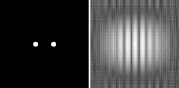
Figure 7: Intensity distributions in the plane of the screen and 75cm
behind the screen
We can ``play'' with the interferometer model, moving the pinholes and changing their sizes and shapes. The following script models the interference of a plane wave diffracted at three round apertures:
#!/bin/csh -f
#model of a screen with three round holes
begin 0.005 0.55e-6 512 > beam
#Three circular apertures:
circ_ap 0.00012 -0.0005 -0.00025< beam > beam1
circ_ap 0.00012 0.0005 -0.00025< beam > beam2
circ_ap 0.00012 0. 0.00025< beam > beam3
#Mixing three beams, rewriting initial beam:
b_mix beam1 < beam2 | b_mix beam3 > beam
#writing Postscript Picture
cat beam | file_ps young2.ps 128 >/dev/null
#propagation 0.75 m and second file
forvard 0.75 < beam | file_ps young3.ps 128 >/dev/null
#removing all beam files
rm beam beam1 beam2 beam3
#all done
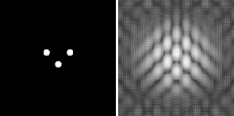
Figure 8: Intensity distributions in the plane of the screen and 75cm
behind the screen
The next interferometer is more interesting:
#!/bin/csh -f
#model of a screen with two slits, one tilted
begin 0.005 0.55e-6 512 > beam
#Two slits one tilted :
rect_ap 0.0001 0.0025 -0.0005 < beam > beam1
rect_ap 0.0001 0.0025 0.0005 0 15 < beam > beam2
#Mixing two beams, rewriting the initial beam:
b_mix beam1 < beam2 > beam
#writing Postscript Picture of the screen with slits
cat beam | file_ps slit0.ps 128 >/dev/null
#propagation 0.75 m and second file slit1.ps
forvard 0.75 < beam | file_ps slit1.ps 128 >/dev/null
#removing all beam files
rm beam beam1 beam2
#all done
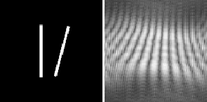
Figure 9: Intensity distributions in the plane of the screen and 75cm
behind the screen
In the last example the intensity distribution is modulated by the wave, reflected from the grid edge, though it gives a good impression about the general character of the interference pattern. To obtain a better result, the calculations can be conducted in a larger grid or with another numerical method.
This example uses direct integration algorithm (the input and output have different scales and samplings):
#!/bin/csh -f
#model of a screen with two slits, one of them tilted
#note the number of points and the size of the grid
begin 0.0026 0.55e-6 64 > beam
#Two slits one tilted, the slits are as high as the grid:
rect_ap 0.0001 0.0025 -0.0005 < beam > beam1
rect_ap 0.0001 0.0025 0.0005 0 15 < beam > beam2
#Mixing two beams, rewriting the initial beam:
b_mix beam1 < beam2 > beam
#writing postscript file of the screen with slits
cat beam | file_ps slit2.ps 64 >/dev/null
#propagation 0.75 m into different grid, writing second file slit1.ps
forward 0.75 0.005 64 < beam | file_ps slit3.ps 64 >/dev/null
#removing all beam files
rm beam beam1 beam2
This example uses approximately 25 times less memory than the previous
FFT, calculation takes from minutes to tens of minutes, depending on
the floating-point efficiency.
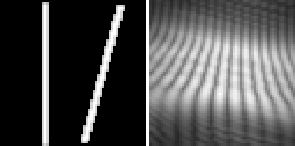
Figure 10: Intensity distributions in plane of the screen and 75 cm
after the screen, note that input and output have different
scales, input grid is 2.6x2.6mm, output is 5x5mm
Interpol is the tool to manipulate the size and the dimension of the grid and to change the shift, rotation and the scale of the field distribution. It accepts six command line arguments, the first is the new size of the grid, the second and others are optional. The second argument gives the new sampling, the third and fourth determine shifts in X and Y directions, the fifth gives the field rotation (after shifting). The last argument defines the magnification, its action is equivalent to passing the beam through afocal system with magnification M (without diffraction, but preserving the integral intensity). For example if the field was propagated with FFT algorithm forvard, then the grid contains empty borders which are not necessary for further processing. Other way around, after forward we have to add some empty borders to continue with forvard. Interpol is useful for interpolating into grids with different size and samplings. Of course, it is not wise to interpolate a grid of 512x512 points into a grid of 4x4, and then back to 512x512, because all information about the initial field will be lost. The same is true for interpolating a distribution defined in the square of 1x1m to 1x1mm and back. When interpolating into a grid with larger size, for example from 1x1 to 2x2, the program puts zeros into added regions.
In LightPipes1.2 a better (and slower) interpolation routine (12-point two-dimensional cubic interpolation) is introduced. Linear interpolation remains with the name interp1.
#!/bin/csh -f #starting with forvard (near field) begin 0.01 1e-6 | rect_ap 0.005 | forvard 0.2 >foo #continuing with forward (far field) file_ps int1.ps <foo |interpol 0.0075 64|forward 400 0.4>foo1 file_ps int2.ps <foo1| file_int in |cros_out cros >/dev/null rm foo foo1
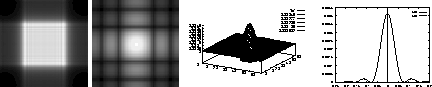
Figure 11: Intensity distributions in the near field, in the far field, far
field surface plot and far field cross section (from left to right)
There are four phase filters available in LightPipes - wavefront tilt, the quadratic phase corrector lens, a general aberration in the form of a Zernike polynomial, and a user defined filter. To illustrate the usage of these filters let's consider the following examples:
begin 0.04 1e-6 | rect_ap 0.02 | lens 8 | cros_out outpha > out file_ps lens1.ps < out | forvard 4 |file_ps lens2.ps >/dev/null
The first sequence of operators forms the initial structure, filters the field through the rectangular aperture and then filters the field through the positive lens with an optical power of 0.125D (the focal distance of 1 / 0.125=8m). With the second command we propagate the field 4 m forvard. As 4m is exactly the half of the focal distance, the cross section of the beam must be reduces twice.
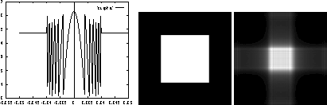
Figure 12: The phase distribution after passing the lens, intensity in the plane of
the lens and at the distance equal to the half of the focal
distance. (from left to right)
We have to be very careful, propagating the field to the distance which is close to the focal distance of a positive lens- the near-focal intensity and phase distributions are localized in the central region of the grid occupying only few sampling intervals. This leads to the major loss of information about the field distribution. The problem is solved by applying the coordinate system which is tied to the divergent or convergent light beam. The tools to do this will be described later.
The lens may be decentered, lens 8 0.01 0.01 produces a lens with a focal distance of 1/0.125, shifted by 0.01 in X and Y directions. When the lens is shifted, only the phase mask correspondent to the lens is shifted, not the aperture of the lens or light beam itself.
The wavefront tilt is illustrated by following examples:
begin 0.04 1e-6 | rect_ap 0.02 | tilt 1e-4 -1e-4 |forvard 8 > foo cros_out out <foo >/dev/null
The result is shown in Fig. 13.
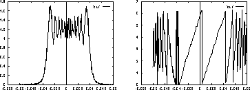
Figure 13: The intensity and the phase after tilting the wavefront by 1e-4 rad
and propagating it 8 m forward. Note the transversal shift of
the intensity distribution and the phase tilt.
In this example the wavefront was tilted by  rad in X
and Y directions, then propagated to the distance Z=8m. In the
output distribution we observe the transversal shift of the whole
intensity distribution by
rad in X
and Y directions, then propagated to the distance Z=8m. In the
output distribution we observe the transversal shift of the whole
intensity distribution by  .
.
Two arguments must be passed to tilt even if one of the two arguments of tilt equals to zero.
Any aberration in a circle can be decomposed over a sum of Zernike polynomials. Formulas given in [2] have been directly implemented in LightPipes. The filter is named Zernike and accepts four command line arguments:
Cylindric lens can be modeled as a combination of Zernike:
begin 0.01 1e-6 | circ_ap 0.0045 | file_ps cl0.ps\ | Zernike 2 2 0.0045 20 | Zernike 2 0 0.0045 -10\ | Fresnel 1.55 | interpol same same 0 0 45 |\ file_ps cl1.ps > /dev/null
Figure 14: The intensity in the input plane and after propagation through
a cylindrical system, defined as a combination of Zernike polynomials and
free space propagation.
The result of propagation to the focal plane of cylindric lens, defined as a combination of two Zernike polynomials, is shown in Fig. 14.
The principle of beam propagation in the ``floating'' coordinate system (for the case of a lens waveguide) is shown in Fig. 15
Figure 15: Illustration for the light propagation in lens waveguides with
fixed and floating coordinate systems.
The spherical coordinates follow the geometrical section of the divergent or convergent light beam. Propagation in spherical coordinates is implemented with programs lens_forvard and lens_fresn. Both filters accept two parameters: the focal distance of the lens placed in the input of the propagation distance, and the distance of propagation. When lens_forvard or lens_fresn is called, it ``bends'' the coordinate system so that it follows the divergent or convergent spherical wavefront, and then propagates the field to the distance Z in the transformed coordinates. Filter convert should be used to convert the field back to the rectangular coordinate system. Some LightPipes filters can not be applied to the field in spherical coordinates.
As the coordinates follow the geometrical section of the light beam, operator lens_forvard 10 10 will produce floating exception because the calculations just can not be conducted in a grid with zero size (that is so in the geometrical approximation of a focal point). On the other hand, diffraction to the focus is equivalent to the diffraction to the far field (infinity), thus FFT convolution algorithm will not work properly anyway. To model the diffraction into the focal point, a more complicated trick should be used:
begin 0.01 1e-6|rect_ap 0.005|lens 10|lens_fresn 1.111111 1 \ |convert y|cros_out cros>/dev/null
Here we calculate the diffraction to the focus of a lens with a focal distance of 1m. It is represented as a combination of a weak phase mask lens 10 and a ``strong'' geometrical coordinate transform lens_fresn 1.111111 1. The grid after propagation is 10 times narrower than in the input plane. The focal intensity is 650 times higher than the input intensity and the wavefront is plain as expected. The same method is used in the script farfield (in the example's directory) to calculate the farfield distributions.
Diffraction behind the beam waist is more tricky: it can be done with lens_forvard but will not work with lens_fresn. Spherical coordinate variant of steps is not implemented, because the spherical coordinates also should be applied to absorption/refraction coefficients, which is far from trivial.
A filter called fil_ter is used to manipulate the phase and intensity of the light beam.
USAGE: fil_ter C1 C2 F [N], where C1 is character constant with valid values 'int' and 'pha' C2 is character constant with valid values 'mult' and 'subst' F is the name of a file containing intensity/phase mask It may be portable graymap or anymap (*.pgm, *.pnm) with a grayscale data. Matrix F must have the same dimensions as the grid N is (any) optional argument indicating that the intensity mask should be normalized before applying Examples: fil_ter int mult aa: filter THROUGH the intensity mask from a file aa fil_ter pha subst aa: substitute the phase with a phase taken from file aa fil_ter pha mult aa: filter the field through phase filter aa fil_ter int subst aa: substitute intensity with one taken from file aa fil_ter int subst aa haha: substitute the intensity with a normalized one taken from the file aa
The distributions for importing may be formed by an external program - here is a simple Fortran77 example (arb.f) of such an operation:
Figure 16: An arbitrary intensity distribution
c Copyright Gleb Vdovin, 1995
c
c This Fortran program forms complex
c intensity and phase filters in files in and pha,
c to use with LightPipes
open(1, file='in', form='formatted')
open(2, file='pha', form='formatted')
do i=1,256
c ii corresponds to the X coordinate
ii=i-129
do j=1,256
c jj corresponds to the Y coordinate
jj=j-129
c ai and af are some arbitrary function
c of the coordinates ii and jj,
c ai corresponds to intensity and af is the phase:
ai=abs(sin(i/10.)*cos(j/5.))
af=cos(i/10.)*sin(j/5.)
c with this "if" a circular aperture is cut:
c writing intensity:
if (ii**2+jj**2 .le. 64**2) then
write(1,*) ai
else
write(1,*) 0.
end if
c writing phase:
write(2,*) af
end do
c empty line is a row separator:
write(1,*)
write(2,*)
end do
c all done:
close(1)
close(2)
stop
end
This program forms two files: in and pha. A beam can be filtered through these filters to produce the intensity distribution shown in Fig. 16:
begin 0.1 1e-6 | fil_ter int subs in|file_ter pha subs pha\ | file_ps arb.ps > /dev/null
The phase and intensity distributions may be produced with a LightPipes script itself. File_int, file_pha and file_pgm provide such a possibility. The dimensions of the exported and imported distributions must be the same (this can be fixed with interpol), otherwise the behavior is not defined. Any (square) file (gif,tiff, bmp) containing graphics, can be converted into pgm format - for example using xv, and imported by fil_ter as the intensity or the phase distribution.
random is a random filter with a uniform distribution. It uses standard C function rand (many consider it as a bad one, but it exists everywhere). By default random takes the random seed from the system clock, but if the result should be repeated with the same seed, the random seed (unsigned int) may be supplied as the third command line argument. The first argument may be int for the intensity or pha for the phase, the second gives the amplitude of the random phase screen (uniform distribution) in radians, or the amplitude of the intensity noise (uniformly distributed additive) normalized to the maximum intensity.
LightPipes.1.1 and later versions provide a possibility to perform arbitrary filtering in the Fourier space. There is an operator, performing the Fourier transform of the whole data structure: pip_fft.
pip_fft performs FFT of the field distribution USAGE: pip_fft IND , where IND is direction, IND=1 for forward, or -1 for inverse
Here is the example of a spatial filter:
#!/bin/csh -f # random screen and propagation begin 0.01 1e-6 200|circ_ap 0.003| random pha 3 | Fresnel 1 > foo # how it looks like: cat foo|file_ps unfiltered.ps 100 >/dev/null # spatial filter cat foo |pip_fft 1|circ_ap 0.0005|pip_fft -1 >foo1 # how it looks after filtering cat foo1 |file_ps filtered.ps 100 >/dev/null # remove FOO's rm foo foo1
Figure 17: Intensity distributions before and after
applying the spatial filter.
Note, we still can apply all the intensity and phase filters in the Fourier-space. The whole grid size in the angular frequency domain corresponds to where is the grid step. One step in the frequency domain corresponds to where x is the total size of the grid. LightPipes filters do not know about all these transformations, so the user should take care about setting the proper size (using the relations mentioned) of the filter (still in linear units) in the frequency domain.
In many cases, the frequency spectrum occupies only few sampling intervals. In this case filtering mask has to be defined only on a few grid points, making precision definition of the mask impossible (too few points). In this case, interpolation into a grid with maximum possible dimensionality is advised, to define the filter mask with a higher precision.
There are two programs for phase unwrapping unf3 and unf4. The phase distribution saved in the gnuplot format may be filtered to obtain unwrapped phase plot. The operation of unwrapping is sometimes (very frequently) somewhat unstable, therefore two different programs are given. There is no guarantee that these filters will always work. They work well on smooth distributions. For example:
#!/bin/csh -f begin 0.01 1e-6 60|lens 5 |file_pha pha >/dev/null cat pha | unf3 > pha1 cat pha | unf4 > pha2You can easily see the difference between pha, pha1 and pha2 after plotting the files.
Filter normal normalizes the integral intensity to 1.
Filter convert is used to transform spherical coordinates into Decarte's ones.
Filter absorber introduces intensity attenuator.
Filter a_phase compares two phase distributions, prints some info to the stderr and outputs the phase difference to stdout. a_phase is optional and may be not included into this distribution.
There are more programs like scale, c_matlab or c_xplot, operating on only intensity or only phase distributions. All these programs are more or less self-documented. They are distributed with source, therefore no explicit description is given here.
The l_amplif introduces a simple single-layer model of a laser amplifier.
l_amplif filters the field through a laser medium USAGE: l_amplif G L I, where G is the gain, L and I are the length and the saturation intensity of the medium.It is useful for modeling of amplifiers and lasers with active medium.
Strehl prints to the stderr the current parameters of beam. Using it in in combination with l_amplif you may calculate and print out the output power of a laser with active medium.
Example:
begin 1 1 | rect_ap 0.5 | normal y | l_amplif 0 1 1 | Strehl y > /dev/null normal: Normalization coefficient= 2.539215e-01 Strehl: ratio= 1.000000e+00 energy= 1.000000e+00 Center_of_gravity: x= 9.926167e-24 y= 4.268252e-22 Grid size: 1.000000e+00, Grid sampling: 256 begin 1 1 | rect_ap 0.5 | normal y | l_amplif 1 1 1 | Strehl y > /dev/null normal: Normalization coefficient= 2.539215e-01 Strehl: ratio= 1.000000e+00 energy= 1.499308e+00 Center_of_gravity: x= 1.875808e-23 y= -3.237424e-21 Grid size: 1.000000e+00, Grid sampling: 256
We can easily model a shearing interferometer using the operators introduced in the previous sections. Suppose we have to model a device shown in Fig. 18.
Figure 18: The shearing interferometer
Let , , , the focal length of the lens is -20m, the beam is divided 1:1 and one of two beams is shifted by D=3mm in the X direction and in the Y direction after reflection on the back surface of the plane-parallel plate.
#!/bin/csh -f # starting, lens, Z1 begin 0.04 5e-7 | circ_ap 0.01 |lens -20|forvard 0.5|b_split foo1 > foo # shifting beam 3 mm without real interpolation, mixing it # with centered beam interpol 0.04 256 0.003 0.001 <foo1|b_mix foo |forvard 0.5>foo2 # postscript output file_ps shear1.ps 128<foo2|cros_out out >/dev/null rm foo foo1 foo2In Fig 19 is shown the intensity distribution in the plane of the screen, obtained as a result of running this script:

Figure 19: The intensity distribution in the plane of the screen, obtained with
the model of a shearing interferometer, the intensity cross-section is shown
in the right graph
We can put a source of arbitrary aberration on the place of a lens, for example we can introduce a spherical aberration with amplitude of 10 Rad:
#!/bin/csh -f # starting, lens, Z1 begin 0.04 5e-7 | circ_ap 0.01 |Zernike 4 0 0.01 10|\ forvard 0.5|b_split foo1 > foo # shifting beam 3 mm without real interpolation, mixing it # with centered beam interpol 0.04 256 0.003 0.00 <foo1|b_mix foo |forvard 0.5>foo2 # postscript output file_ps shear3.ps 128<foo2 >/dev/null rm foo foo1 foo2Changing the amplitude and the order of aberration we can obtain all the shearing interferograms shown in the section about shearing interferometers of [3].
Figure 20: Shearing interferograms of the spherical aberration, coma and astigmatism
In the rotational shear interferometer the beam interferes with a copy of itself rotated by the angle around optical axis. Interferometer is useful for detecting of asymmetrical aberrations. We shall consider only bare-bone (no propagation and diffraction) model of such an interferometer:
#!/bin/csh -f # Rotational interferometer with coma begin 0.04 5e-7 | circ_ap 0.01 |Zernike 3 1 0.01 10|b_split foo1 > foo # rotating and mixing interpol 0.04 256 0. 0. 180 <foo1|b_mix foo >foo2 # postscript output file_ps rotational1.ps 128<foo2 >/dev/null rm foo foo1 foo2
#!/bin/csh -f # Rotational interferometer with astigmatism begin 0.04 5e-7 | circ_ap 0.01 |Zernike 2 2 0.01 10|b_split foo1 > foo # rotating and mixing interpol 0.04 256 0. 0. 90 <foo1|b_mix foo >foo2 # postscript output file_ps rotational2.ps 128<foo2 >/dev/null rm foo foo1 foo2
#!/bin/csh -f # Rotational interferometer with high order aberration begin 0.04 5e-7 | circ_ap 0.01 |Zernike 7 3 0.01 10|b_split foo1 > foo # rotating and mixing interpol 0.04 256 0. 0. 90 <foo1|b_mix foo >foo2 # postscript output file_ps rotational3.ps 128<foo2 >/dev/null rm foo foo1 foo2
Figure 21: Rotational interferograms of coma , astigmatism
and the high order Zernike aberration
In radial shearing interferometer the beam interferes with a copy of itself magnified by the factor M. Interferometer is useful for detecting of axisymetrical aberrations. As for the previous case, we shall consider only bare-bone (no propagation and diffraction) model of such an interferometer:
Figure 22: Radial shearing interferograms of defocus, spherical
aberration and the higher-order aberration
#!/bin/csh -f # Radial shearing interferometers: #defocus begin 0.04 5e-7 | circ_ap 0.01 |Zernike 2 0 0.01 10|b_split foo1 > foo # Radial magnification interpol 0.04 256 0. 0. 0 1.3 <foo1|b_mix foo >foo2 # postscript output file_ps radial1.ps 128<foo2 >/dev/null rm foo foo1 foo2 #spherical aberration begin 0.04 5e-7 | circ_ap 0.01 |Zernike 4 0 0.01 10|b_split foo1 > foo # Radial magnification interpol 0.04 256 0. 0. 0 1.3 <foo1|b_mix foo >foo2 # postscript output file_ps radial2.ps 128<foo2 >/dev/null rm foo foo1 foo2 #High order aberration without axial symmetry begin 0.04 5e-7 | circ_ap 0.01 |Zernike 10 4 0.01 10|b_split foo1 > foo # Radial magnification interpol 0.04 256 0. 0. 0 1.3 <foo1|b_mix foo >foo2 # postscript output file_ps radial3.ps 128<foo2 >/dev/null rm foo foo1 foo2
Figure 23: Twyman-Green interferometer (left) and the output of the interferometer model
The scheme of the interferometer is shown in Fig. 23. In this example we put D=1cm, , , , , . The first mirror is plane and the second is aberrated (coma) with aberration amplitude of . The beam-splitter is ideal dividing the beam 3:7. We run the following script:
#!/bin/csh -f # propagation and splitting begin 0.03 5e-7 | circ_ap 0.005 | forvard 0.5 | b_split foo 0.3 >foo1 # Propagation to mirror1, reflection, # propagation back and beam-splitter again forvard 1 <foo|i_filter 0.7 >foo2 # Propagation to mirror2, reflection, # propagation back and beam-splitter again forvard 0.4 < foo1 | Zernike 3 1 0.005 25|forvard 0.4|i_filter 0.3 >foo3 # mixing the two beams and propagation to the screen b_mix foo2 <foo3 |forvard 1| interpol 0.012 128 | file_ps tg.ps 128>/dev/null # deleting the temp files rm foo foo1 foo2 foo3
We know enough to solve a real problem with LightPipes. Here is the script which calculates the output mode of an unstable resonator with square mirrors. The example is taken from [10]. The scheme of the resonator is shown in Fig. 24 together with the equivalent lens waveguide scheme used in calculations. The infinite sequence of reflections from resonator mirrors is replaced here by finite but long enough sequence of propagations through afocal magnifying lens system.
Figure 24: An unstable confocal resonator and a lens waveguide
Figure 25: Intensity and phase distributions at the output of the model
of unstable resonator
#!/bin/csh -f # LightPipes script: a model of an unstable resonator # with N=10, M=2, # See D.B. Rench, Applied Optics 13, 2546...2561 (1974) # All dimensions are taken from the table on p. 2552 # in this reference # theoretically the initial field distribution may be random # but we'll use a good plane wave because it won't # converge fast with a random distribution begin 20. 3e-4 512 >field1 # 20 field iteration inside the resonator @ i=0 while( $i < 20) # reflection from the convex mirror and propagation rect_ap 5.48 < field1 | lens -1e4 |forvard 1e4 > field2 # reflection from the concave mirror and propagation rect_ap 10.96 <field2 | lens 2e-4 | forvard 1e4 | normal y > field1 Strehl y < field1 >/dev/null @ i += 1 end # output of the resonator is screened by the output mirror: # the output rect_screen 5.48 <field1 | file_int in |\ file_pha pha|file_ps res_out.ps |Strehl y>/dev/null # removing the temp files rm field1 field2
When executed, the script prints values of the feedback coefficient and other information for the output beam at each iteration.
From the output sequence we see that after 20 iterations the feedback coefficient is quite stable, so the calculations can be terminated. If the files field1 and field2 are not deleted, we can continue the calculations later. To do this, the operator begin should be commented, othervise it will start again the calculations from a plane wave.
We can compare the intensity and phase distribution in the output mode with original distributions obtained by Rench [10]:
In this example we calculated the mode profile of an ideal unstable resonator. A resonator with aberrated and misaligned mirrors can be also easily modeled. One problem with the considered model is the way, the mirror's curvature is defined. Curved mirrors are modeled as phase masks lens and for high curvatures the phase difference between the neighbour points of grid may be higer than , especially in the proximity of the mirror edges. If the phase difference is greater than , the results are not valid, so the nuber of points must be increased to fix the mentioned phase condition. It leads to enormous grids (we used 512x512 ) for a simple problem. This can be solved by applying spherical coordinate system to propagate spherical waves. In such a system the coordinate surfaces coincide approximately with the propagating wavefront.
The script for a laser with a confocal unstable resonator in spherical coordinates follows (including laser medium):
#!/bin/csh -f #all dimensions are in mm here begin 7. 3e-4 100 >field1 # 40 iterations inside the resonator @ i=0 while( $i < 20) # reflection from the convex mirror and propagation rect_ap 5.48 < field1|l_amplif 1e-4 1e4 1 | lens_fresn -1e4 1e4 > field2 # reflection from the concave mirror and propagation rect_ap 10.96 <field2 |l_amplif 1e-4 1e4 1| lens_fresn 2e4 1e4\ |Strehl y > field1 cp field1 field_out interpol 7. <field1 > field2 mv field2 field1 @ i += 1 end # output of the resonator is screened by the output mirror: # the output echo 'Output beam:' cat field_out |convert y |rect_screen 5.48 | file_ps res_out.ps\ |Strehl y >/dev/null # removing the temp files rm field1 field2
Figure 26: The output (intensity and phase) of an
unstable resonator, modeled in spherical coordinates
Here is the tail of the screen output:
Strehl: ratio= 8.415976e-01 energy= 3.978092e+02 Center_of_gravity: x= -1.330218e-03 y= -1.100146e-03 Grid size: 1.400000e+01, Grid sampling: 100 Output beam: Strehl: ratio= 8.209055e-01 energy= 2.917869e+02 Center_of_gravity: x= -1.716706e-03 y= -1.600309e-03 Grid size: 1.400000e+01, Grid sampling: 100
The last script is much faster and the field occupies a larger part of the grid. It produces almost the same feedback coefficient, the Strehl number is also close to that obtained in the previous example, the difference is due to the better computational approach used in the latter case.
Here the model of the propagation of a Gaussian beam in a lens-like waveguide is built. The profile of the refractive index is chosen so, that the beam preserves approximately its diameter in the waveguide (we use fundamental mode). We'll consider the propagation of an axial mode, tilted with respect to the waveguide axis and a non-axial mode. First, we form the distribution of a refractive coefficient in a file. We do that with a Fortran program (any other way, for example by hand ;-), can be used:
program med
c The program to form a quadratic
c distribution of the refractive index;
c nc is the grid sampling
c an0 is the axis value of refractive index
c an1 is n1 in the formula for refractive index:
c n=sqrt(an0^2-an0*an1*r^2) where
c r is the radial coordinate
c xmax is the grid size
read*, nc, an0, an1, xmax
dx=xmax/(nc-1.)
n2=nc/2+1
do i=1,nc
ii=i-n2
x=dx*ii
do j=1,nc
jj=j-n2
y=jj*dx
r2=x*x+y*y
print*, sqrt(an0*an0 -an1*an0*r2)
end do
print*
end do
stop
end
Here we use the approximation for the profile of the refractive
coefficient in th form: . It is a well-known
fact [12] that the half-width of the fundamental Gaussian mode of a
lens-like waveguide is defined as: . For a waveguide of 1x1mm, ,  and ,
the Gaussian mode has a diameter of 226 m. We shall use this value
in the following script, which demonstrates three-dimensional propagation
of tilted and off-axis beams in square absorptive medium:
and ,
the Gaussian mode has a diameter of 226 m. We shall use this value
in the following script, which demonstrates three-dimensional propagation
of tilted and off-axis beams in square absorptive medium:
#!/bin/csh -f # We form here the distribution of the refractive index # in the file refr.ind; # med is a Fortran program to do that: f77 -o med med.f -lm echo 100 1.5 400 1e-3 | med > refr.ind # The array of refractive indexes (1.5 ) is used here # to form an array of absorbtion coefficients. # No optics here, it's just a reuse of the table of numbers! # scale -1. < refr.ind > abs.co # propagation of a gauss beam in a quadratic medium: # the steps back are implemented with the # second operator to show the reversibility of the # operator: begin 1e-3 1e-6 100 | gauss 113e-6 | tilt 1e-3 0 |\ steps 1e-3 1000 refr.ind abs.co s.out 10 |\ steps -1e-3 1000 refr.ind abs.co si.out 10 > /dev/null # The graphs can be plotted with gnuplot: # set par # set con # splot 's.out' using 1:6:2 w l # here is the propagation of a non-axial gauss beam: begin 1e-3 1e-6 100 | gauss 113e-6 2e-4 |\ steps 1e-3 1000 refr.ind abs.co s_s.out 10 > /dev/null # here we have two non-axial beams: begin 1e-3 1e-6 100 | gauss 113e-6 2e-4 >foo1 begin 1e-3 1e-6 100 | gauss 113e-6 -2e-4 >foo2 b_mix foo2 < foo1 |\ steps 1e-3 1000 refr.ind abs.co s_ss.out 10 > /dev/null rm foo*
The array of refractive coefficients is plotted in Fig. 27.
Figure 27: Distribution of the refractive index in a lens-like waveguide.
The result of the first example - centered Gaussian beam under small angle to the axis in a lens-like medium is shown in Fig. 28
Figure 28: Radial (x at the left, y at the right) energy distribution in a tilted Gaussian beam propagating in a lens-like absorptive medium.
The result of ``reversed'' propagation is shown in Fig. 29. Comparison with Fig. 28 proves the validity of algorithm for refractive/absorptive media.
Figure 29: Radial (x at the left, y at the right) energy distribution in a tilted Gaussian beam, reversely propagated in a lens-like absorptive medium.
The result of propagation of ``shifted'' Gaussian beam, incident parallel to the axis is shown in Fig. 30.
Figure 30: Radial (x at the left, y at the right) energy distribution in a shifted Gaussian beam, incident parallel to the waveguide axis.
The result of propagation of two ``shifted'' Gaussian beams, both incident parallel to the axis of the waveguide is shown in Fig. 31.
Figure 31: Radial (x at the left, y at the right) energy distribution in two Gaussian beams, incident parallel to the waveguide axis.
Steps is a ``rich'' filter. Whole classes of waveguide devices can be simulated. Simple examples in this manual illustrate only the very basic capabilities.
The idea is very simple: we have two near field intensity distributions, but we don't know the phase of the field. To reconstruct the phase we start from a field with uniform (random) distribution and iterate then the field ``forward'' and ``back'', substituting each time the measured intensity and leaving the phase untouched. This process converges to a field distribution with reconstructed phase, providing a good match to the measured intensities. This very specific algorithm may be easily implemented with LightPipes script:
Figure 32: Given intensity distributions (top), reconstructed intensities (middle) and reconstructed phase
#!/bin/csh -f # (C) Gleb Vdovin 1993-1995 # This file is a part of LightPipes.1.1 distribution # # # this script demonstrates the possibility of # phase reconstruction from two near-field intensity # distributions i_1 and i_2 @ num_point1 = 128 @ num_point2=256 @ num_iter= 100 @ dist = 2 # here we start from a plane phase: begin 0.011 6.33e-7 $num_point1| random 0 > f_far1 #begin 0.02 6.33e-7 $num_point| random 9 > f_near1 # num_iter iterations @ i=0 while( $i < $num_iter) echo $i # Here we substitute the known second intensity and interpolate # into a bigger grid - to make "forvard" happy fil_ter int subs i_2 < f_far1 |interpol 0.02 256>foo # propagation "back" to the plane of the first image cat foo| forvard -2|interpol 1.1e-2 128 > f_near1 # substitution of the first intensity distribution # and propagation forward: fil_ter int subs i_1 < f_near1 | Fresnel 2 > f_far1 @ i += 1 end
Example script inverse solves similar problem for Young interferometer.
Figure 33: Initial transparant (left), filtered with a high-frequency component cut (center), the same filter with low frequency components cut (right).
LightPipes can be used to model the classical setups of Fourier-optics information processing. For example, this script models coherent optical computer, performing Fourier-plane image filtering:
#!/bin/csh -f # importing the intensity mask: begin 1e-2 5e-7 200 | fil_ter int subs reg.pgm | forvard 1 > foo # lens, focal filter, free space... lens 1 < foo | forvard 1 | circ_ap 0.0015 | forvard 1 > foo1 # lens free space, output. lens 1 < foo1 | forvard 1 | file_ps filtered_l.ps 200 4 > /dev/null # all done
compare the result with the result of:
lens 1 < foo | forvard 1 | circ_screen 0.0015 | forvard 1 > foo1 # lens free space, output. lens 1 < foo1 | forvard 1 | file_ps filtered_h.ps 200 4 > /dev/null # all done
The initial distribution (file reg.pgm) and two filtered images are shown in Fig. 33.
In the simplest case the interferogram (hologram) is generated by mixing of an aberrated beam with a plane wave:
#!/bin/csh -f # Aberrated beam: begin 1e-2 1e-6 200 | Zernike 7 1 0.72e-2 10 > foo # Saving and unfolding the phase: file_pha pha 50 < foo >/dev/null unf3 < pha > pha1 # Addition of tilt, to obtain the vertical fringes: tilt 2e-3 0 < foo > foo1 # Ideal beam, mixing -> generation of interferogram: begin 1e-2 1e-6 200 | b_mix foo1 | file_int int_in 256 > foo2 # Plot the interferogram: file_ps interf.ps 200 1 < foo2 > /dev/null # All doneThe generated interferogram, saved in file interf.ps may be directly plotted, as shown in Fig. 34.
Figure 34: The phase distribution and the interferogram, generated with
LightPipes script.
To reconstruct the phase from the obtained interferogram, we shall build a model of the algorithm of phase reconstruction, using shift and filtering in the fourier domain. Let the fringe pattern has the form:
where
where the phase  contains information about the mirror
shape and the term describes the wavefront tilt. Fourier
transform of the expression (13) gives:
contains information about the mirror
shape and the term describes the wavefront tilt. Fourier
transform of the expression (13) gives:

where the capitals A and C denote the Fourier spectra and f is the spatial frequency.
Figure 35: Fourier spectra of a fringe pattern modulated by the spatial
frequency (top) and a single spectrum translated to the origin
(bottom).

Figure: Spectrum of the interferogram shown in Fig. 34,
with a side lobe shifted to the origin (left), the same after
filtering (middle) and finally, the reconstructed phase (right).
We may take one of two side-lobe spectra  or
and translate it to the origin with zero spatial frequency as shown in
Fig. 35. Now we can take the inverse Fourier transform of
the translated spectrum to obtain c(x,y) defined in the
expression(13, 14). Calculating the complex
logarithm of the expression (14) we obtain the phase
or
and translate it to the origin with zero spatial frequency as shown in
Fig. 35. Now we can take the inverse Fourier transform of
the translated spectrum to obtain c(x,y) defined in the
expression(13, 14). Calculating the complex
logarithm of the expression (14) we obtain the phase  :
:
The phase  is obtained indeterminate to a factor of
with its principal value localized in the range of . To obtain the continuous phase map, a special unwrapping
algorithm, removing discontinuities with an amplitude close to is applied to the reconstructed phase map.
The algorithm implementation includes the following steps:
is obtained indeterminate to a factor of
with its principal value localized in the range of . To obtain the continuous phase map, a special unwrapping
algorithm, removing discontinuities with an amplitude close to is applied to the reconstructed phase map.
The algorithm implementation includes the following steps:
#!/bin/csh -f #Importing the interferogram intensity pattern: begin 1e-2 1e-6 200 | fil_ter int subs int_in >foo #Fourier transform and shift in the spectral domain: pip_fft 1 < foo | interpol 1e-2 200 10.e-4 0 > foo1 #Postscript of the intensity distribution in the Fourier domain: interpol 4e-3 < foo1 | file_ps fft_shifted.ps 200 14 |rect_ap 15e-4 1\ |file_ps fft_shifted_filtered.ps 200 14> /dev/null #Filtering in the Fourier domain, reverse FFT and saving of the phase: rect_ap 15e-4 1 < foo1 |pip_fft -1|file_pha pha 50 > foo #Unwrapping the phase: unf3 -1 < pha > pha1 #All doneThe initial interferogram is even (symmetric) with respect to the vertical axis, but the phase is odd, thus the phase is reconstructed with inverted sign (this depends on the direction of the shift in the frequency domain). The amount of shift in the frequency domain can be calculated using relations, given in the section containing description of pip_fft, it also can be determined experimentally by visualizing the spectrum and shifting it, to position one of its side lobes at the origin. This can be done with interpol. Visualization of the spectrum side lobes requires high (of the order of 10).
MSDOS port has the full functionality of the Unix distribution. All command names are cut to 8 letters, capitals are not supported. Thus, for example, instead of a Unix command LongCommandOfPipes you must use the abridged version: longcomm. Simple NULL have to be used instead of /dev/null The .EXE files are compiled with DJGPP compiler (version 1.12) - many thanks to DJ Delorie. DJGPP is the MSDOS port of Gnu C compiler, it is freely available from any Simtel mirror. If you don't have enough RAM, the program will swap to the harddisk. Under MSDOS it was approximately 2 times slower than under Linux on the same computer (Pentium90 of unknown origin with 24MB of RAM). I tested it on a 386 with 3MB of RAM- it runs all the example scripts and some of them take number of days to execute. It runs happily in a DOS box under MS Windows 3.1. It also runs all scripts under DOSEMU 0.60.1 with 8MB of DPMI (I tried it again under DOSEMU 0.60.4. - it works but it was not really stable).
Use the part 1 of this manual as the command reference and tutorial for MSDOS port. You just have to take into account some basic differences between DOS and Unix.
The syntax depends on the version of command.com you use. Microsoft command.com is supposed to be present. 4DOS is better. There is a problem with programming loops in script batch files, the simplest solution is just a mechanical repetition of the command sequence inside the batch file. The script files are getting longer, but the result is achieved. There is a full set of ported to MSDOS example scripts in the directory scripts.
Some rules to port a script from Unix to DOS (the list is not complete):
The command reference is excluded from this manual. If you have a working program, just type the command you want to know about at the shell prompt, it will print short explanation to the screen.
If you want to get a list of all descriptions, the following command (under Unix Csh) will do the job:
rm refer; touch refer;
find . -perm -555 -exec {} >> & refer \;
The resulting file refer contains all descriptions of all executables.